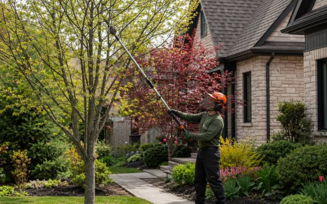

Tree Trimming and Pruning
How much foliage sits in a crown determines the workload on the roots below it, and on sand that matters more than anywhere else, which is why tree trimming and pruning is worth getting right here. Insurance covers every job, and tree trimming and pruning is available throughout Burford and the old township.
View Tree Trimming and Pruning